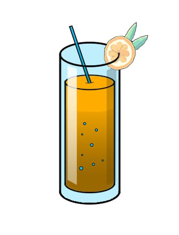

10 популярних коктейлів в Україні
Клавер Клаб

Класичний коктейль на основі джину, малинового сиропу, лимонного соку та білка. Має ніжний смак і красивий рожевий колір.
Мохіто

Освіжаючий коктейль з рому, м'яти, лайму, цукру та содової. Дуже популярний влітку.
Маргарита

Мікс текіли, апельсинового лікеру та соку лайму. Подається з сіллю на краю келиха.
Піна Колада

Тропічний коктейль з рому, кокосового молока та ананасового соку. Дуже солодкий і ароматний.
Апероль Шприц
Італійський коктейль з аперолю, ігристого вина та содової. Має яскравий помаранчевий колір.
Негроні
Гіркий коктейль з джину, кампарі та вермуту. Вважається класикою барної культури.
Хиросима

Фруктовий коктейль з горілки, персикового лікеру, апельсинового та журавлиного соку.
Віскі сауер

Смачних напій робиться на основі віскі і подається в роксах.
Лонг Айленд
Міцний коктейль з горілки, джину, рому, текіли, лікеру та коли. Дуже популярний серед молоді.
Блуді Мері
Пікантний коктейль з горілки, томатного соку, лимону та спецій. Часто подається на сніданок.